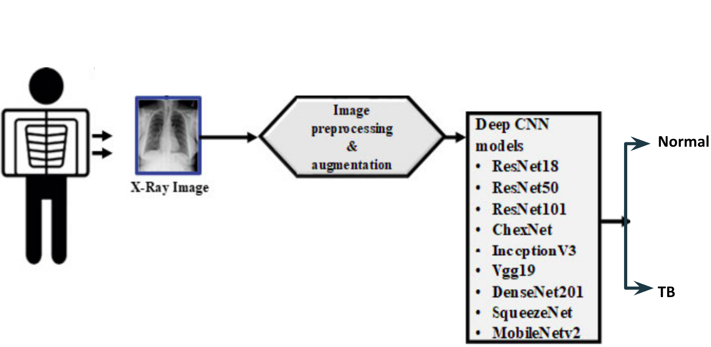
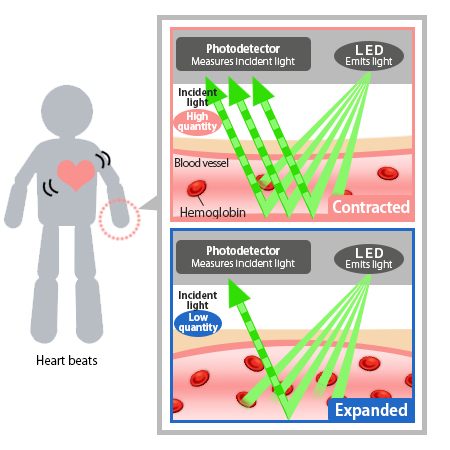
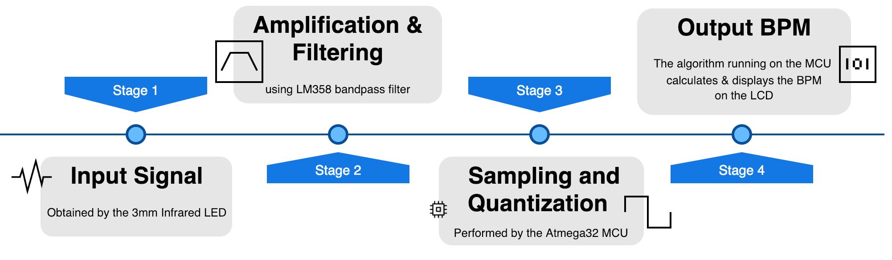

Tuberculosis Detection using Chest X-ray with Deep Learning
Technologies: CoLab, Tensorflow, CNN
In this work, I have detected TB reliably from the chest X-ray images using image
pre-processing, data
augmentation and deep-learning classification techniques. Four different deep CNNs
(ResNet18, ChexNet,
InceptionV3, and MobileNet) were used for transfer learning from their pre-trained initial
weights and were
trained,validated and tested for classifying TB and non-TB normal cases.

2022
Online Book Sharing Platform
Technologies: Nodejs, ReactJs, MongoDB
Online Book-selling and giveaway platform. Users can purchase books from their local
bookstores and even
add sale posts. Additionally, users may donate their unused old books
2021
Portable Heart Rate Monitoring System
Technologies: AtMega32 micro controller, HC-05 Bluetooth Module, 16x2 LCD
Display, Android Device
Portable heart rate monitor is a personal monitoring device that measures the heart rate
using optical sensors in real time and send
the measured the data to directly to an android device. We are developing prototype of this
application using the
continuous monitoring of parameters to detect and predict the heart attack and generate an
alarm.


2020
Algorithm Simulator
Technologies: JavaFX, Java, InelliJ
Aim of this project was to get familiar with OOP language, GUI designing, and simulate
different algorithms
visually by taking input from users. This is a java project that shows simulation of 3
sorting algorithms and BFS.
JavaFx is used for the UI part. In our simulation part of sorting algorithm, we resize the
bar of input given by the
user so that it can fit in window.
2018
Spondon - A medical App
Technologies: NodeJs, MongoDB, Android
User can search a blood donor; Search parameter: name, blood group, division, district,
availability
User can search an ambulance or oxygen cylinder; Search parameter: name division, district
User can show the live bed status of all the hospitals of Bangladesh and filter the
hospitals according to hospital name, division, district, availability, last update
We have an admin side built in React from where admin can perform CRUD operation for
ambulance and oxygen cylinder.
2018